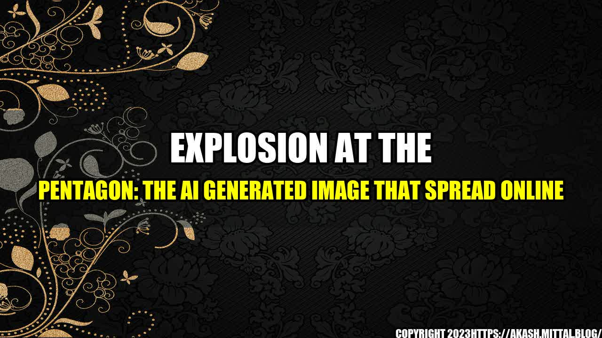

Explosion at the Pentagon: The AI Generated Image that Spread Online

It was just another typical day at the Pentagon. The sun was shining, the birds were chirping, and employees were going about their usual business. Suddenly, there was a loud explosion that shook the entire building. People screamed and ran for cover as smoke filled the air.
Soon, news of the explosion spread like wildfire online. Everyone wanted to know what had happened and how bad it was. To make matters worse, an AI generated image of the explosion started to circulate on social media. Many people believed that this was an actual photo of the incident.
The Dangers of AI Generated Images
AI generated images have become increasingly prevalent in recent years. They are created using machine learning algorithms that analyze thousands of real images to create completely new ones. While this technology can be incredibly useful for creating realistic images for movies and video games, it also poses some serious dangers.
- AI generated images can be used to spread fake news and propaganda. For example, a fake image of a political figure doing something scandalous could be used to sway public opinion against them.
- AI generated images can be used to create pornographic or other inappropriate content. This is particularly worrying when it comes to images of children.
- AI generated images can create confusion and misinformation in emergency situations, like the explosion at the Pentagon. People may believe that an image is real when it is actually completely fabricated.
The dangers of AI generated images cannot be overstated. It is crucial that people understand that not everything they see online is real.
How to Spot AI Generated Images
While it can be difficult to spot AI generated images with the naked eye, there are some things to look out for:
- Repeated objects: If you see objects in an image that are identical or very similar, it could be a sign that it was generated by AI.
- Unnatural lighting: AI generated images often have lighting that doesn't look quite right. Pay attention to the shadows and reflections in the image.
- Pixelation: If an image looks too perfect, it might be because it was generated by an algorithm. Look closely at the pixels to see if they are all exactly the same.
Of course, the best way to avoid falling for fake images is to fact-check everything you see online. Don't believe everything you read or see without first verifying the source.
Conclusion
- AI generated images can be dangerous when they are used to spread fake news, inappropriate content, or confusion during emergency situations. It is important to be aware of this technology and educate others about its potential dangers.
- Learning how to spot AI generated images can help you avoid falling for fakes. Pay attention to the details and don't take everything you see at face value.
- Fact-checking is more important than ever. Before you share an image or a story, make sure it is coming from a reputable source and that it is true.
#ExplosionatthePentagon #AIGeneratedImages #FakeNews #FactChecking
#ArticleCategory: Technology #Hashtags: #ExplosionatthePentagon #AIGeneratedImages #FakeNews #FactChecking #SEOKeywords: Explosion at the Pentagon, AI generated images, fake news, propaganda, misinformation, fact-checking.
Curated by Team Akash.Mittal.Blog
Share on Twitter Share on LinkedIn